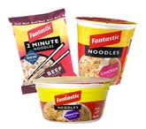
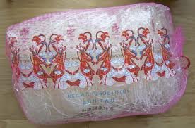
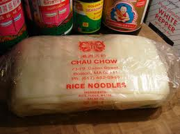

My dearest Bill,
Επιτέλους αξιώθηκα να σου γράψω πώς μαγειρεύω. Αν σε ενδιαφέρει keep reading.
Για να γίνει ένα σωστό φαΐ (στα μπαμ) θέλουμε:
Πίνακας Τεχνικών Όρων
- Φαντασία
- Βάση
- [ΠΡΟΑΙΡΕΤΙΚΑ] Υδατάνθρακα
- [ΠΡΟΑΙΡΕΤΙΚΑ] Πρωτεΐνη
- [ΠΡΟΑΙΡΕΤΙΚΑ] Λαχανικά
- [ΠΡΟΑΙΡΕΤΙΚΑ] Μπαχαρικά
- [ΠΡΟΑΙΡΕΤΙΚΑ] Σβηστήρι
- [ΠΡΟΑΙΡΕΤΙΚΑ] post-Σβηστήρι pre-Σερβίρισμα
1. Φαντασία
Εδώ δικέ μου είσαι μόνος σου. Αλλά αν έχεις πολύ από αυτό, μπορείς να σταματήσεις να διαβάζεις αυτές τις μαλακίες.
2. Βάση
Για τη Βάση θέλουμε:
- [ΥΠΟΧΡΕΩΤΙΚΑ] Λάδι (ή βούτυρο, αλλά εγώ δε βάζω ποτέ ποτέ ποτέ ποτέ γιατί είναι τίγκα ανθυγιεινό). Λάδι κατά προτίμηση ελαιόλαδο (αυτά για το έξτρα παρθενό και μέχρι την τελευταία σταγόνα και τέτοια είναι παπαρούνες και πράσινα άλογα - μόνο όσοι κομπλεξικοί θέλουν να πουλήσουν μούρη λένε ότι καταλαβαίνουν διαφορά στην ποιότητα), τα άλλα όλα (σπορέλαιο, ηλιέλαιο, φοινηκέλαιο, τηγανέλαιο, σκατέλαιο) μαλακία είναι, αλλά από το ολότελα...
- [ΠΡΟΑΙΡΕΤΙΚΑ] Κρεμμύδι
- [ΠΡΟΑΙΡΕΤΙΚΑ] Σκόρδο
- [ΠΡΟΑΙΡΕΤΙΚΑ] Μανιτάρια
- [ΠΡΟΑΙΡΕΤΙΚΑ] Αλλαντικά (μπέικον, ζαμπόν, κτλ.)
- [ΠΡΟΑΙΡΕΤΙΚΑ] Πιπεριές
- [ΠΡΟΑΙΡΕΤΙΚΑ] Καρότο
- [ΠΡΟΑΙΡΕΤΙΚΑ] Ελιές
3. Υδατάνθρακα
Υδατάνθρακας = Μακαρόνια, Ρύζι, Πατάτες, Νουντλς, Πλιγούρι (άμα βρεις σφύρα μου)
4. Πρωτεΐνη
Πρωτεΐνη = Κρέας (γουρούνι, μοσχάρι, κοτόπουλο, γαλοπούλα, ψάρια, γαρίδες κτλ.) και αυγά
5. Λαχανικά
Λαχανικά = Οτιδήποτε. Μπορείς να βρεις mix από κατεψυγμένα λαχανικά (καλαμπόκι, μπρόκολο, φασόλια, αρακά, καρότο, σπανάκι, κουνουπίδι κτλ). Μπορείς βέβαια και φρέσκα, αλλά λέμε τώρα
6. Μπαχαρικά
Μπαχαρικά = Αλάτι, πιπέρι, ρίγανη, πάπρικα, κάρι. Δες ό,τι σου αρέσει. Μπαχαρικά παίρνεις μία φορά και σου κρατάνε για μήνες. Και δε χαλάνε! Δηλαδή, χαλάνε, αλλά δεν παθαίνεις τίποτα αν τα φας. Αν έχουν βγάλει ζωύφια, πάμε στην κατηγορία της Πρωτεΐνης ;)
7. Σβηστήρι
Σβηστήρι = Κρασί, ούζο, ουίσκι (γενικά αλκοολούχο), κονσέρβα ντοματοπελτές ή σως σόγιας, λεμόνι, ή σως Worcestershire (το τελευταίο είναι κάτι πολύ ωραίο/πικάντικο/δεν καίει που το πουλάνε εκεί που έχουν τις μουστάρδες, τις κέτσαπς, τις σώγιες κτλ). Το μειονέκτημα του κρασιού είναι πως αν το ανοίξεις, σε λίγες μέρες χαλάει και αν δεν πίνεται, δεν μαγειρεύεται. Το λεμόνι επίσης χαλάει (στο ψυγείο κρατάνε 2-3 εβδομάδες ΑΝΕΤΑ). Οι άλλες οι σως και η κονσέρβα ντομάτας κρατάνε μήνες. Το Σβηστήρι θα σου πω μετά πώς το χρησιμοποιείς.
8. post-Σβηστήρι pre-Σερβίρισμα
post-Σβηστήρι pre-Σερβίρισμα = μαϊντανός, άνηθος, τριμμένο τυρί, ξηροί καρποί
A priori required knowledge (προς γνώση και συμμόρφωση - μη γαμήσω)
Χρησιμοποιούμε μόνο ένα σκεύος πάντα (κατσαρόλα ή τηγάνι - για να έχουμε να πλένουμε μόνο ένα μετά). Σε τηγάνι μόνο τα μακαρόνια δε γίνονται, γιατί πρέπει να ρίχνεις συνέχεια νερό. Οπότε πάρε μία κατσαρόλα μεσαίου μεγέθους (αν χωράει μπάλα ποδοσφάιρου είναι μεγάλη). Με την κατσαρόλα πιτσιλάει και λιγότερο οπότε έχεις και λιγότερα καθάρισμα.
Αυτά που μπαίνουν στη Βάση τα κόβουμε σε κομματάκια περίπου 1 κυβικό εκατοστό. Μπορείς και μεγαλύτερα, αλλά όσο πιο μικρά, τόσο πιο γρήγορα τσιγαρίζονται. Αλλά αν τα κάνεις ψείρες θα κόβεις 4-5 ώρες. Οπότε το 1 κυβικό εκατοστό είναι η χρυσή τομή.
Τις πατάτες και τα κρέατα τα κόβεις τόσο όσο θες να είναι η μπουκιά σου. Και πάλι όσο πιο μικρά τα κομμάτια, τόσο πιο γρήγορα γίνονται, αλλά θέλει περισσότερη ώρα να κόβεις. Οπότε βρίσκεις τη χρυσή τομή που θες.
Χωρίς υπερβολή, με αυτά που ακολουθούν από τη στιγμή που πεις/φωνάξεις "ΠΕΙΝΑΩΩΩ!!!" (και έχεις τα υλικά σπίτι) σε μισή ώρα ΘΑ ΕΧΕΙΣ ΦΑΕΙ ΤΟΥ ΣΚΑΣΜΟΥ!
Ξεκινάμε το μαγείρεμα - Βήματα:
- Βράζεις τους Yδατάνθρακες (μακαρόνια, ρύζι κτλ.) μαζί με αλάτι στο σκεύος (θυμίσου: είπαμε κατσαρόλα γιατί βολεύει). Θεωρητικά είσαι έτοιμος να φας, αλλά θέλουμε να το κάνουμε και λίγο νόστιμο, οπότε, αυτά που βράσανε τα βάζεις στο πιάτο που θα φας (είπαμε: θέλουμε να πλένουμε όσο το δυνατόν λιγότερα).
- ΣΤΕΓΝΩΝΟΥΜΕ ΤΟ ΣΚΕΥΟΣ (μπορείς να το βάλεις 1-2 λεπτά στο μάτι της κουζίνας μόνο του για να στεγνώσει καλά). Αν δε στεγνώσει καλά και ρίξεις λάδι (ή βούτυρο) θα αρχίσει να πιτσιλάει και θα τα κάνει ΟΟΟΟΟΟΟΟΟΟΟΟΟΟΟΟΛΑ ΚΩΩΩΩΩΩΩΩΛΟ. Και καίει και λίγο.
- Ρίχνουμε το λάδι ή το βούτυρο (αλλά σοβαρά τώρα, από το να ρίξεις βούτυρο καλύτερα να πας στα macdonalds και να φας από τα αποφάγια)
- Ρίχνουμε τόσο λάδι ώστε να καλύψουμε ίσα ίσα την επιφάνεια του σκεύους. Παραπάνω δεν πειράζει, αλλά αν βάλεις λιγότερο, θα κολλήσει στη συνέχεια ό,τι βάλεις μέσα.
- Το αφήνουμε λίγο να ζεστάνει το λάδι (περίπου 3-4 λεπτά ας πούμε). Αν δεις και βγαίνουν ατμοί σημαίνει πως έχει ζεσταθεί ΠΑΑΑΑΑΑΡΑ πολύ το λάδι και ό,τι ρίξεις μέσα θα καεί. Αν γίνει αυτό, το καλύτερο που έχεις να κάνεις είναι να πετάξεις το λάδι στο νεροχύτη (ΜΕ ΠΟΛΛΗ ΠΡΟΣΟΧΗ ΓΙΑΤΙ ΚΑΙΕΙ και αν έρθει σε επαφή με νερό θα αρχίσει να πιτσιλάει και θα τα κάνει όλα πουτάνα) και να βάλεις καινούργιο λάδι.
- Όταν ζεστάνει το λάδι ρίχνεις μέσα τα υλικά που θες απο τη Βάση. Ξεκινάς από τα πιο μεγάλα κομμάτια (με τη λογική πως τα μικρότερα γίνονται πιο γρήγορα). Κάθε 1-2 λεπτά ρίχνεις το επόμενο υλικό, μέχρι να τα ρίξεις όλας. Εδώ έχεις κάτι και ανακατεύεις (κουτάλι, κουτάλα, κτλ. - γενικά κάτι με "κ", "τ" και "λ") συνέχεια γιατί τα περισσότερα, αν δες τα ανακατέψεις, θα κολλήσουν. Ουσιαστικά εδώ είναι μόνο που χρειάζεται να είσαι πάνω από το φαΐ συνέχεια (εκτός από όταν το τρως) για να μην κολλήσουν τα υλικά στο σκεύος. Συνήθως (βλ. μαγείρεμα στην τηλεόραση), πρώτα ρίχνεις το κρεμμυδι, μετά μανιτάρια, μετά πιπεριές, μετά κατεψυγμένα λαχανικά και ΠΑΝΤΑ τελευταίο το σκόρδο (γιατί καίγεται πολύ εύκολα και μετά βρωμάει και το φαΐ και το σπίτι). Εγώ προσωπικά ρίχνω ΠΑΝΤΑ πρώτα τα μανιτάρια (αν έχω) γιατί μου αρέσουν καλοψημένα.
- Αν το μόνο σου υλικό για τη Βάση είναι (εκτός από το λάδι) τα κατεψυγμένα λαχανικά: Ξέχνα τη Βάση εντελώς και ρίξε τα κατεψυγμένα λαχανικά μέσα στο νερό που βράζουν οι Υδατάνθρακες, μόλις είναι σχεδόν έτοιμοι και σε 10 λεπτά είσαι έτοιμος και τρως.
- Τώρα ρίχνουμε τα Μπαχαρικά σε όση ποσότητα και με όποια σειρά θέλουμε (Μπορούμε πάντα με το κουτάλι που ανακατεύουμε να δοκιμάζουμε ώστε να προσθέτουμε επιπλέον Μπαχαρικά - αυτό κάνουν και στα εστιατόρια, άσε το τι δείχνουν στα ριάλιτι :Ρ). Επίσης, αν γίνει μαλακία και πέσει πολύ το αλάτι και δεν τρώγεται το φαΐ, μπορείς να ρίξεις μέσα μία πατάτα ολόκληρη (καθαρισμένη) και θα απορροφήσει πολύ από το αλάτι (δοκιμασμένο/εγγυημένο). Αν γίνει μαλακία και πέσει πολύ το πιπέρι, φρόντισε να σου φυτρώσουν μεγάλα @@ (ή ρίξε/πιες γάλα - βοηθάει με δοκιμασμένα/εγγυημένα 100% αποτελέσματα). Τα υπόλοιπα Μπαχαρικά αν πέσουν πολύ δεν πειράζει και τόσο (δηλαδή πειράζει, αλλά δεν έχω λύση, οπότε για να μην πετάξεις το φαΐ, κάθεσαι και το τρως, οπότε δεν πειράζει και τόσο).
- Ήρθε η ώρα της Πρωτεΐνης: ρίχνεις τα κομματάκια που έκοψες το κρέας, αλλά επειδή είναι πιο μεγάλα κομμάτια από τα υλικά της Βάσης, έχεις το περιθώριο να πεταχτείς και για ένα κατούρημα. (ΠΡΟΣΟΧΗ: Ελέω σαλμονέλας σταματάμε να δοκιμάζουμε το φαΐ με το κουτάλι - αυτό δεν το κάνουν στα εστιατόρια, πάλι μαλακίες δείχνουν στην τηλεόραση. Μπορούμε να ξαναδοκιμάσουμε το φαΐ μόλις το κρέας φαίνεται να έχει ψηθεί καλά).
- Τα Λαχανικά τα βάζεις στο τέλος πάντα, γιατί όσο λιγότερο μαγειρευτούν, τόσο πιο θρεπτικά είναι. Και πάλι: τα πετάς μέσα και ανακατεύεις.
- Μόλις δεις την Πρωτεΐνη καλοψημένη και τα Λαχανικά λαχταριστά ήρθε η ώρα του Σβηστηριού: το ρίχνεις και ανακατεύεις λίγο - ίσα ίσα να απλωθεί παντού. Εκτός από την κονσέρβα ντομάτας, όλα τα άλλα Σβηστήρια θέλουν 2-3 λεπτά και πας στο επόμενο βήμα. Η ντομάτα μπορεί να θέλει και 20 λεπτά (για πολύ FAIL μιλάμε)!
- Ήρθε η ώρα να πάρεις τον Υδατάνθρακα που έβρασες στην αρχή. Τον πετάς μέσα στο σκεύος, ανακατεύεις μία και είσαι έτοιμος!
- Πλέον μπορείς να φας, αλλά για την έξτρα παπάντζα (να μαγέψεις φίλους, φίλες, πεθερές - φτου φτου φτου, τηλεθεατές κτλ.) υπάρχει το post-Σβηστήρι pre-Σερβίρισμα (ή κατά τηλεοράσεως ευαγγέλιον "food styling"): Βάζεις το φαΐ στα πιάτα (προφανώς πιάτα, γιατί όταν είσαι μόνος σου δεν κάνεις τέτοιες παπαριές - κάθεσαι και τρως, όποιος λέει το αντίθετο είναι φαντασιόπληκτος παλιομαλάκας) και πασπαλίζεις από πάνω χρώμα. Ή κοινώς: ψιλοκομμένο μαϊντανό, άνηθο και τυρί (Πρόσεξε το "και"! Δε λέω "ή"! Αυτά συνδυάζονται πολύ ωραία μεταξύ τους). Δεν αναφέρω επιπλέον υλικά, γιατί νομίζω τα ήδη αναφερόμενα είναι αρκετά εξωτικά για αρχάριο.
- Ε άντε φάε!
Διάφορα tips
- ΠΛΕΟΝΕΚΤΗΜΑ: τα μανιτάρια πρέπει να είσαι πολύ ανάπηρος για να τα κάψεις, γιατί εχουν πολύ νερό μέσα τους. Επίσης είναι πολύ θρεπτικά.
- ΜΑΛΑΚΙΑ: Οι κίτρινες και οι πορτοκαλί πιπεριές δεν έχουν καθόλου γεύση. Τις βάζεις μόνο σε φάση "έξτρα παπάντζα" (βλ. "Βήμα 12" μαγειρέματος).
- ΤΑΧΥΤΗΤΑ: Δεν βράζεις Υδατάνθρακα και μόλις είναι έτοιμη η Βαση πετά από πάνω 2-3 αυγά (είτε ολόκληρα είτε χτυπημένα ομελέτα, αν και η ομελέτα νομίζω είναι πιο νόστιμη).
- ΠΡΟΝΟΗΤΙΚΟΤΗΤΑ: Εγώ χρησιμοποιώ μία ξύλινη πλάκα για να κόβω τα υλικά μου την οποία την ΠΛΕΝΩ ΑΜΕΣΩΣ μόλις φτάσουμε στο "Βήμα 11". Έτσι, όσο δεν έχουν στεγνώσει ακόμα τα υγρά των υλικών που έκοψα την πλένω σε 1 λεπτό (κυριολεκτικά). Αν την αφήσεις για μετά (έστω και για μετά το φαΐ), θα έχουν ξεραθεί όλα και θα τρίβεις με τις ώρες για να την καθαρίσεις.
- ΒΡΩΜΑ: Όπου ακουμπήσει ωμό αυγό (το από μέσα - όχι το τσόφλι) και δεν το χρειάζομαι πλέον, του ρίχνω ξύδι. Έτσι μπορώ να το αφήσω με τις μέρες στο νεροχύτη, χωρίς να το πλύνω και χωρίς να βρωμοκοπήσει όλη η γειτονιά αυγουλίλα (ειδικά το καλοκαίρι :Ρ).
- ΠΟΣΟΤΗΤΑ: Μαγείρεψε τουλάχιστον για δύο μέρες και βάλε και στην κατάψυξη αν θες. Έτσι γλυτώνεις ΠΟΛΛΛΥ χρόνο.
- ΤΕΧΝΟΛΟΓΙΑ: Μία αντικολλητική κατσαρόλα είναι τέλεια για rookies αφού δε σου καίγεται το φαΐ. Απλά πρέπει να χρησιμοποιείς ΜΟΝΟ ξύλινα και πλαστικά κουτάλια για το ανακάτεμα. ΑΠΑΓΟΡΕΥΟΝΤΑΙ ΔΙΑ ΡΟΠΑΛΟΥ μεταλλικά αντικείμενα. Χαράζουν το σκεύος και το στρώμα που εμφανίζεται από κάτω είναι ΚΑΡΚΙΝΟΓΟΝΟ. Το ίδιο ισχύει και για τις ΤΟΣΤΙΕΡΕΣ
- ΣΩΤΗΡΙΑ: Πάρε έναν βραστήρα. Μιλάμε λύνει χέρια! Αντί να περιμένεις 5-10 λεπτά για να βράσει το νερό στην κατσαρόλα, ο βραστήρας το έχει έτοιμο σε 1-2 λεπτά. Οπότε μετά το ρίχνεις στην κατσαρόλα και συνεχίζεις. Και έξτρα μπόνους: φτιάχνεις καφέ τον χειμώνα.
- ΝΟΣΤΙΜΙΑ: Το μπέικον πάει με όλα. Δοκίμασε να το βάλεις σε ό,τι μαγειρέψεις. Θα το κάνει τέλειο.
Extra bonus special round γιατί είσαι καλό παιδί και διάβασες μέχρι εδώ
- ΑΠΩ ΑΝΑΤΟΛΗ: Εδώ και ένα χρόνο ανακάλυψα τα νουντλς. Βρες αυτά που είναι χωρίς σάλτσες και τέτοια. Αυτά είναι στιγμιαία και δεν είναι πολύ θρεπτικά. Έχει πολλά είδη νουντλς. Την πρώτη φορά πάρε 2-3 είδη να δεις ποιά σου αρέσουν καλύτερα. Φτιάχνονται από ρύζι και μερικά έχουν μέσα και αυγό (άρα είναι πιο θρεπτικά και χορταίνεις καλύτερα). Και γίνονται πιο γρήγορα από τα μακαρόνια (περίπου 4-6 λεπτά). Εγώ ας πούμε βράζω νερό στο βραστήρα (1-2 λεπτά). Βάζω το νερό στην κατσαρόλα (που ήδη ζεσταίνεται στο μάτι με λίίίίγο νερό - αν δε βάλεις θα καταλάβεις γιατί :Ρ) και πετάω μέσα τα νουντλς. Σε λιγότερο από 10 λεπτά έχεις ένα αξιοπρεπές φαΐ έτοιμο. Εγώ ρίχνω στο πιάτο μετά σάλτσα σόγιας και πιπέρι.
- ΜΟΥΦΑ ΙΤΑΛΙΑ: Τη Βάση μπορείς να την κάνεις διπλή, τριπλή κτλ. μερίδα, να την βάλεις στο ψυγείο και τις επόμενες μέρες να την πετάς σε ψωμί του τοστ, σε αράβικη/ελληνική/κυπριακή/μεξικάνικη πίτα (ή whatever έχετε εκεί στο Baltimore) σαν βάση για πίτσα (και με λίγο τριμμένο τυρί για έξτρα απόλαυση) να την πετάς στην τοστιέρα ή στο φούρνο και να χορταίνεις (το κατά δύναμην) ανθρώπινα.
- ΜΟΥΦΑ ΙΤΑΛΙΑ 2: Για γρήγορα αποτελέσματα. Παίρνεις έτοιμες σάλτσες για μακαρόνια που έχουν σε βαζάκια, βράζεις τα μακαρόνια πετάς τη σάλτσα και είσαι έτοιμος. Μυστικό: μπορείς να βάλεις λίίίίγη από αυτή τη σάλτσα στα τοστ - κάνει μεγάλη διαφορά.
- ΤΟΣΤ ΜΕ ΕΧΤΡΑ: Κάνεις τα κλασσικά σου τα τοστ. Μέσα μπορείς να βάλεις τυρί Philadelphia. Μπορείς να κάνεις και 2 αυγά ομελέτα και να την φας μαζί ή να την κόψεις στη μέση και να την βάλεις μέσα στα τοστάκια. Αν βρεις και ένα γιαούρτι (και σου αρέσει) ταιριάζει τέλεια.
- ΣΠΕΣΙΑΛ ΟΜΕΛΕΤΑ: Κάνεις την κλασσική ομελέτα με 2-3 αυγά και βάζεις μέσα πιπεριά και μπέικον (αν βρεις και ντομάτα ακόμα καλύτερα)
ΠΡΟΣΟΧΗ!
Ανοίγουμε τέρμα το μάτι της κουζίνας ΜΟΝΟ για να βράσουμε το νερό. Τα υπόλοιπα όλα το βάζουμε το μάτι γύρω στη μέση και λίγο προς τα πάνω. Αν ξεχάσεις το μάτι τέρμα ανοικτό όταν πας να φτιάξεις τη Βάση θα τα κάψεις όλα.
ΠΡΟΣΟΧΗ! ΠΡΟΣΟΧΗ!
Μη μου πεις tl;dr το κέρατο! Μου πήρε 5 ώρες Σαββατόβραδου να γράψω αυτές τις μαλακίες!
ΠΡΟΣΟΧΗ! ΠΡΟΣΟΧΗ! ΠΡΟΣΟΧΗ!
ΠΟΤΕ ΠΟΤΕ ΠΟΤΕ ΠΟΤΕ δε ρίχνουμε νερό σε σκέτο λάδι που καίει. θα αρχίσει να πιτσιλάει και θα τα κάνει πουτάνα μέχρι εκεί που βλέπει το μάτι σου.
ΠΡΟΣΟΧΗ! ΠΡΟΣΟΧΗ! ΠΡΟΣΟΧΗ! ΑΥΤΟ ΔΙΑΒΑΣΕ ΤΟ ΟΠΩΣ ΚΑΙ ΔΗΠΟΤΕ!!!
Αν ξεχάσουμε το λάδι στο σκεύος και πάρει φωτιά (δε μου έχει τύχει ποτέ, αλλά ξέρω 2 περιπτώσεις που έγινε και την γλιτώσανε ΠΟΛΛΛΛΛΥ ελαφριά - λογικά θέλει κανένα 10λεπτό για να γίνει) ΠΟΤΕ ΠΟΤΕ ΠΟΤΕ ΠΟΤΕ ΠΟΤΕ ΠΟΤΕ ΠΟΤΕ ΠΟΤΕ ΠΟΤΕ ΠΟΤΕ ΠΟΤΕ ΠΟΤΕ ΠΟΤΕ ΠΟΤΕ ΠΟΤΕ ΠΟΤΕ δε ρίχνουμε νερό πάνω για να σβήσει!!! Αν ρίξεις νερό, η θερμοκρασία είναι τόόόόόσο μεγάλη που το νερό διασπάται σε οξυγόνο και υδρογόνο και το οξυγόνο ΔΥΝΑΜΩΝΕΙ ΠΑΡΑ ΠΟΛΥ τη φωτιά (οι φλόγες Θα φτάσουν ταβάνι). Παίρνουμε μία πετσέτα/ μπουρνούζι/ σεντόνι/ μπουφάν/ πτυχίο και γρήγορα καλύπτουμε με τη μία ΟΟΟΟΟΟΟΟΟΟΟΟΟΟΛΗ την επιφάνεια του σκεύους. Έτσι σταματάμε την παροχή οξυγόνου στη φωτιά και σβήνει μόνη της. ΚΑΙ ΜΗ ΦΟΒΗΘΕΙΣ: η φωτιά δεν καίει το πρώτο δευτερόλεπτο (είναι σαν το άγιο φως το πάσχα που φέρνουν από τα ιεροσώλυμα)!!!! Και φυσικά ένας πυροσβεστήρας είναι πάντα χρήσιμος (σβήνει φωτιές και αποσυντονίζει διαρρήκτες/επίδοξους βιαστές).
Yours truly (hungry),
A.
ΟΧΙ ΤΕΤΟΙΑ

Αυτά είναι στυλ fast food και δεν είναι θρεπτικά
ΒΡΕΣ ΤΕΤΟΙΑ


Εκτός των άλλων, είναι και φτηνά!
ΠΡΟΣΟΧΗ!!! Αν δε γράφει συστατικά στα αγγλικά μην τα πάρεις!!! Μην πάρεις τίποτα φύκια ή τρίχες από πάντα δεν τρώγονται :Ρ